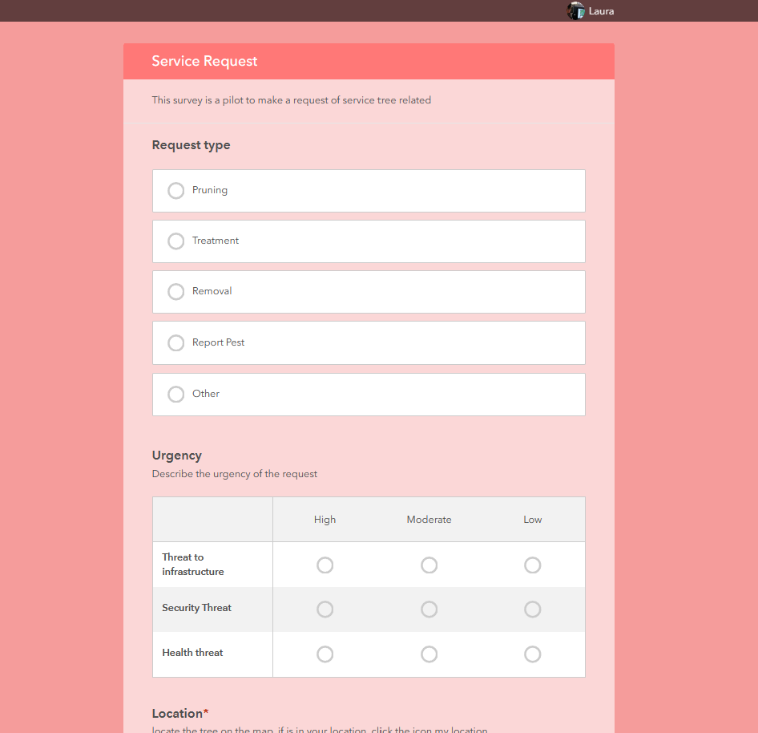
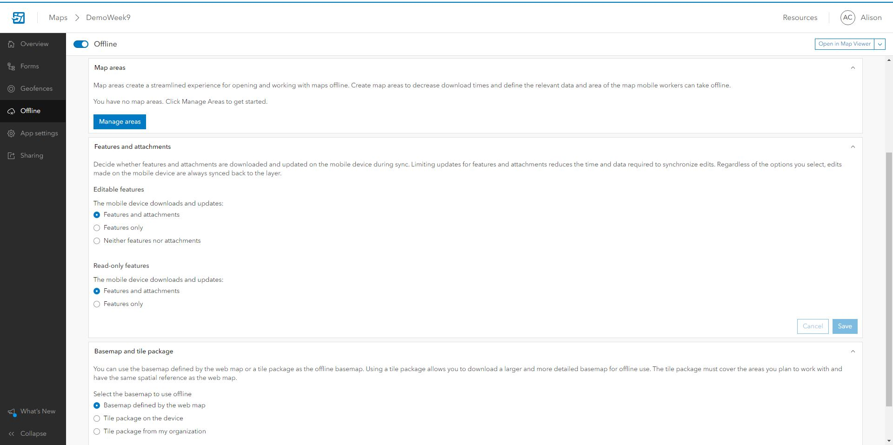
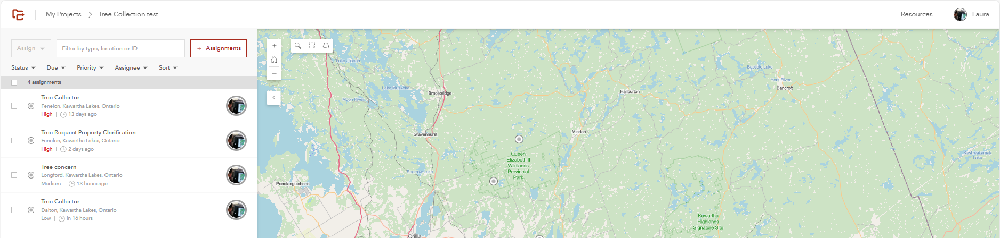

ArcGIS Survey123 is a solution for easy data collection. Surveys can be designed with configured question formats. It is intuitive in its construction and has a pleasant interface for the user.
Descripcion
Field maps is best used for data collection, but also has the capability of editing previously collected data. Many municipalities like Kawartha Lakes, Peterborough City and Peterborough County rely on this ESRI solution to collected and edit their assets Because FielpMaps can be used on a mobile device using the ESRI app it is well adapted to using in the field as the name implies. And so for collecting municipal assets such as trees or various city network and disperssed assets this application is ideal. creating the form is easy using Field Map designer where the user can specify the sepcific questions and resulting answers using ranges and character limits as well as including questions that must be answered along with other restrictions like data entry time which is important to specificy for the resulting data table that is created by the collected data. Along with all of this functionalist the FieldMap application can also integrate warning zones using the geofence function which, by using a preexisting layer, can create a warning that is displayed on the mobile device when it has entered an area specified by the creator of the application to be a warning zone or an area of danger or simply a notification of where the collection has been taken, like near a building or near a specific zone or leaving the zone. As well there is a function ality that can allow the survey to be held offline which uses the devices locatio without the use of internet, this is assistened by the creatio of map areas which help to creat a more efficent offline map with faster downloading speed, also by downloading a tile package instead of using the web map basemap it create an efficent offline collection and mapping service.
This solution allows you to assign tasks and field managers efficiently.
Descripcion